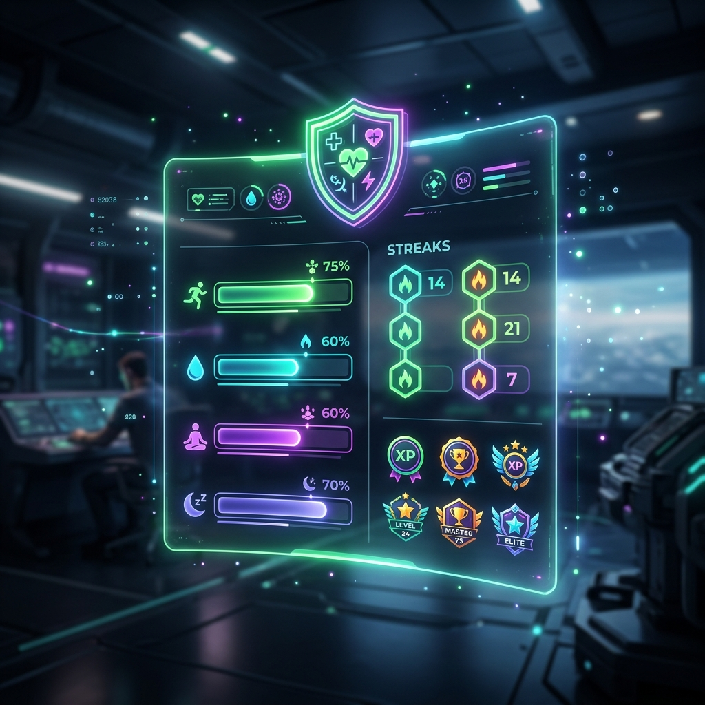
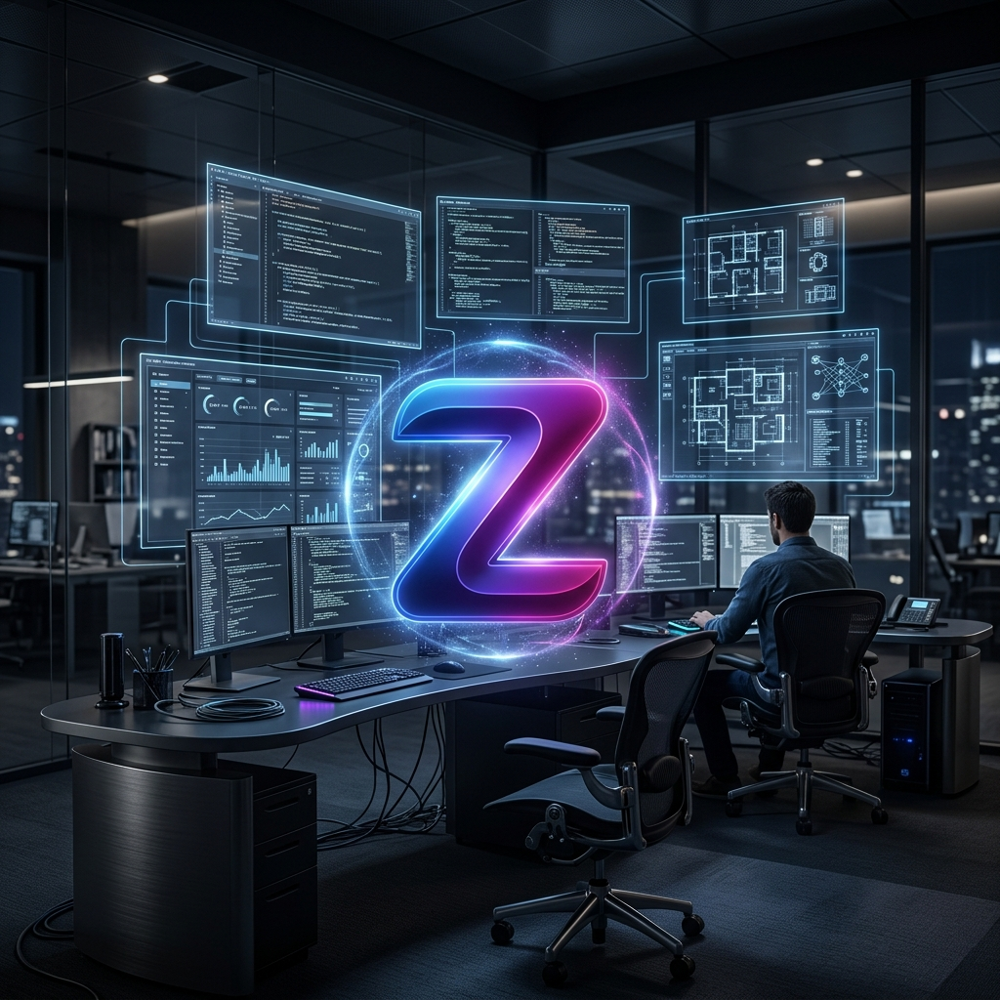

Fault Diagnostics
Project Chronos
A topology-aware causal observabilty fusion pipeline diagnosing failures when telemetry is degraded or clock domains are loose.

Reasoning Architecture
TITAN
Executable intelligence system treating reasoning as a graph verification process, optimizing planning over connected semantic maps.

Atomic Manufacturing
QTA-X
A Validation-Gated Atomic Manufacturing Platform capable of designing, validating, and orchestrating atomic-scale fabrication systems under cryogenics.

Research Paper
Android XR Systems Research
A deep systems-level review paper draft addressing spatial computing moats, hardware-visible privacy gates, and event-based vision pipelines.

Habit Tracker
UrgeGuard AI
Gamified habit tracker designed around behavioral psychology, variable reward loops, and glassmorphic stats widgets.

Official Enterprise
Zaid Asim Softwares
Official UDYAM-registered development and AI consulting platform delivering enterprise platforms globally.

Educational Game
Crafty Kids of India
Interactive cultural crafting game celebrating Indian toy-making traditions, recognized at the STEM Innovation League.

Adventure RPG
Storm of Kings
A 2D adventure RPG layout combining narrative episodic progress, character stats logic, and customized pixel-art environment configurations.